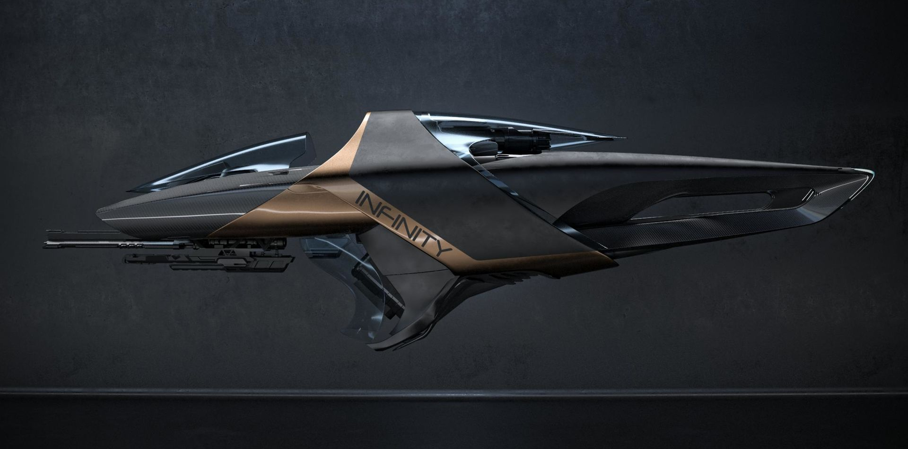

The Origin X1 an open-canopy racer designed by Origin in collaboration with Alberto Vara and his company Infinity Customs. Built from lightweight polymers, the X1 takes speed and agility to the next level thanks to seamlessly integrated engine technology and joint vector thruster placement.
The bike bay of the Origin 400i is specifically designed to accommodate an X1.

The Origin X1 Force is a modified version of the base X1 model, featuring an additional shield generator slot.
The Origin X1 Velocity is the racing variant of the X1 open-canopy vehicle. It eliminates the S1 weapon mount and incorporates a lighter chassis built with Syntek composites to decrease overall ship weight.